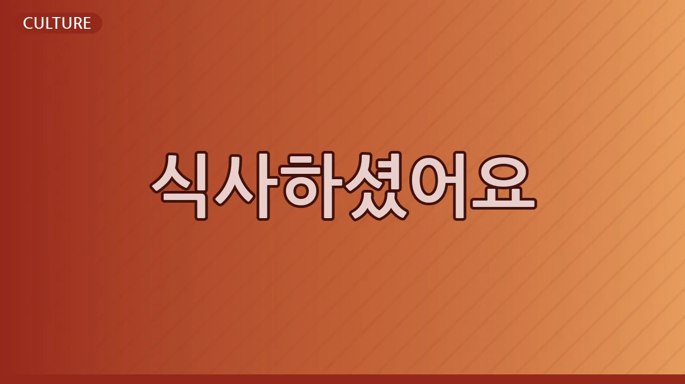

Why Koreans Always Ask "식사하셨어요?" (It's Not Just About Food)
오늘의 표현
한국인 친구를 만났을 때, 혹은 가게에 들어섰을 때 “식사하셨어요?”라는 말을 듣고 의아했던 적이 있나요? 시계를 보면 점심시간도 아니고, 전혀 배고프지 않은데 왜 밥 이야기를 할까 궁금했을 거예요.
이 표현은 단순히 ‘밥을 먹었는지’를 묻는 말이 아닙니다. “식사하셨어요?”는 상대방의 건강과 안부를 묻는 한국식 인사말이자, 깊은 배려를 담은 표현이죠. 주로 아는 사람이나 처음 만나는 사람에게, 시간과 관계없이 쓰입니다.
왜 영어로 직역이 안 될까?
영어로 “Did you eat?” 또는 “Have you had your meal?”이라고 직역할 수 있습니다. 하지만 이 말들은 정말로 '밥을 먹었는지'라는 사실 여부를 확인하는 질문이죠.
한국어 “식사하셨어요?”는 여기에 '잘 지내고 있는지', '별일 없는지', '몸은 건강한지' 등 상대방의 전반적인 안녕과 건강을 묻는 따뜻한 마음이 더해져 있습니다. 단순히 Yes/No로 답하는 질문이 아니라, '당신을 걱정하고 있다'는 메시지를 전달하는 것이죠.
한국인은 어떤 상황에서 쓸까?
- 오랜만에 만난 친구에게: “어유, 오랜만이다! 잘 지냈어? 점심 식사하셨어요? 요즘 바빠 보여서 걱정했는데.” (상대방의 안부와 건강을 염려하는 마음이 담겨 있습니다.)
- 새로운 회사 동료에게: “안녕하세요! 박대리님, 출근하시느라 힘드셨죠? 혹시 아침 식사하셨어요? 제가 커피 한 잔 드릴게요.” (환영과 배려의 의미로, 끼니를 챙겼는지 묻는 친근한 인사입니다.)
문화 이야기
과거 한국은 식량이 부족했던 시기가 길었습니다. 그래서 '밥을 잘 먹는 것'은 단순히 배를 채우는 것을 넘어, 건강과 생존의 문제였죠. '식사' 여부를 묻는 것은 곧 '살아있는지', '안전한지', '건강한지'를 묻는 가장 직접적인 방식이었습니다.
이런 문화적 배경이 오늘날까지 이어져, “식사하셨어요?”는 상대방의 가장 기본적인 필요와 안녕을 묻는 따뜻한 인사말로 자리 잡았습니다. 상대방을 존중하고 배려하는 한국인의 마음이 담겨 있는 것이죠.
여러분의 언어에서는 어떤가요?
여러분의 언어에도 ‘밥 먹었는지’를 묻는 말이 안부 인사의 의미로 사용되는 경우가 있나요? 혹은 상대방의 안녕과 건강을 가장 직접적으로 묻는 특별한 인사말이 있다면 무엇인가요? 궁금합니다!
🔗 이 글도 함께 보면 좋아요: Why Koreans Used to Be 1 or 2 Years Older? The Real Meaning of "한국식 나이"